Automation Execution Guidelines
AIA ALive Mobile App Testing and API
-
About Framework
The Test framework is designed using TestNG with Page Object Model. It’s a Modular Framework. Mobile automation carried out using Appium. The language used is Java. The scope of automation is done only for Android. Reports generated using ExtentReports.
-
Automation Scripts
The automation Scripts covers Testing the API calls and Testing of Frontend Mobile App.
-
Test execution
-
Prerequisites to execute Regression
-
Dependencies/Limitations
-
How to execute the Test
-
How to verify the Results
-
Notes related to Test data Creation/Deletion/Update
-
Observations
-
Prerequisites to execute Regression
-
Following Softwares to be installed to run the automation suite:
-
Android Studio 4.0.1
-
Appium
-
Eclipse
-
-
Ensure Emulator is Active and Appium is running in the machine.
Note: Emulator recommended is “Pixcel 3 API 30”
-
App login credentials (Email and password) to be provided in src/test/java/com.pom.crimson.util/Constants.java and in Properties file
Note: Ensure to maintain separate credentials for automation and that should not be used for other Testing.
-
Apk file is required and file path has to be updated in project.properties file under resources (Refer Screenshot below)
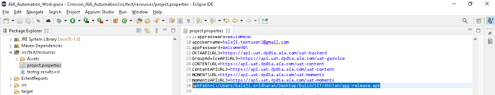
-
Automation Test involves triggering the API request to validate hence correct backend (API end-point) urls in the project.properties file. (Sample Reference)
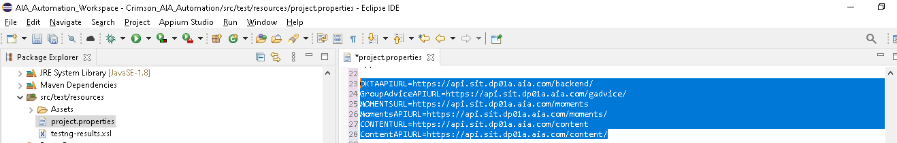
-
Sign-up via email is not automated due to limitation in automation script hence user has to create an email-id in the environment, post that email-id to be updated in Constants file (Its under utils – Refer Screenshot below)
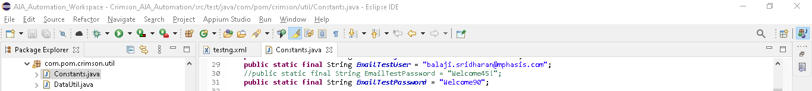
-
Emulator has to be registered with Google and Facebook user. Post that, it needs to be updated in Constants file.
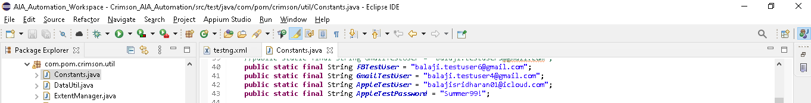
Steps to register the Google in emulator
Note: Ensure Google and Facebook credential is configured in emulator and the same to be stored in Constants file.
Step1: Click on “Continue with Google”
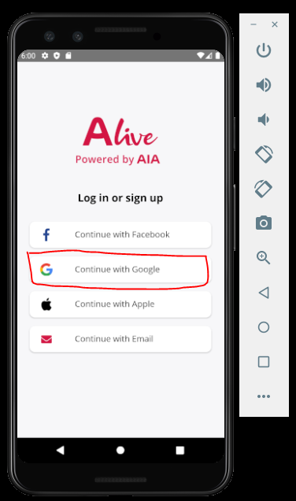
Step2: Click on “Accept and Close”
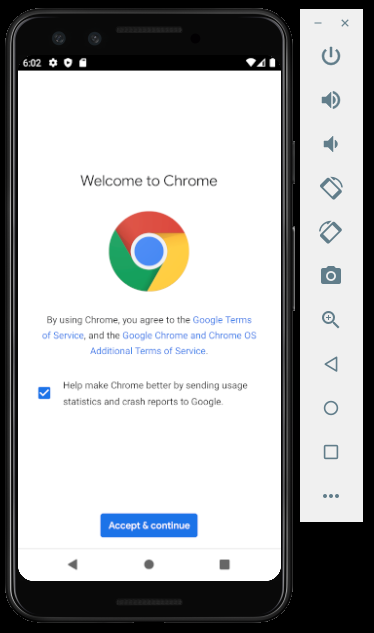
Step3: Click on Next
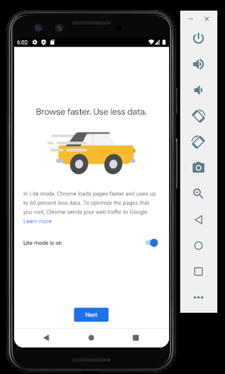
Step4: Click “No Thanks”
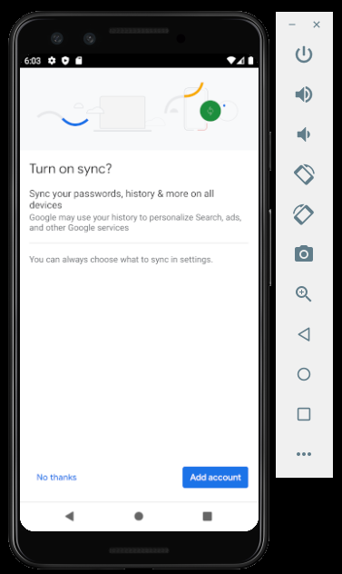
Step5: Configure with Google credentials (Username)
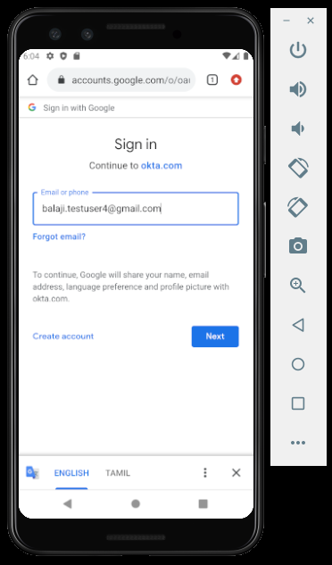
Step6: Configure with Google credentials (password)
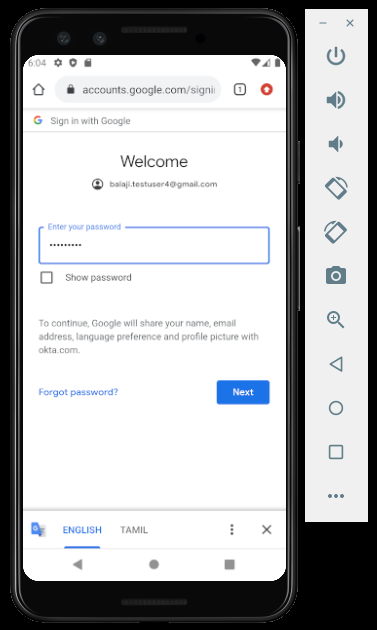
Step7: Logged in with Google in Mobile App.
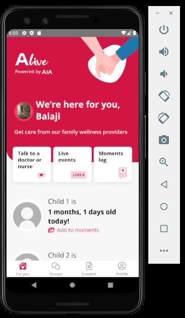
Step8: Verify logged in user a Google credentials in Manage Profile.
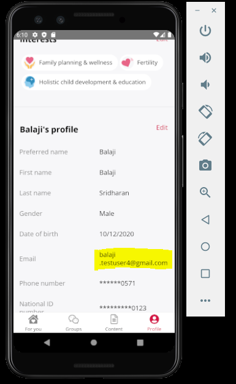
-
Facebook credentials are configured in Emulator
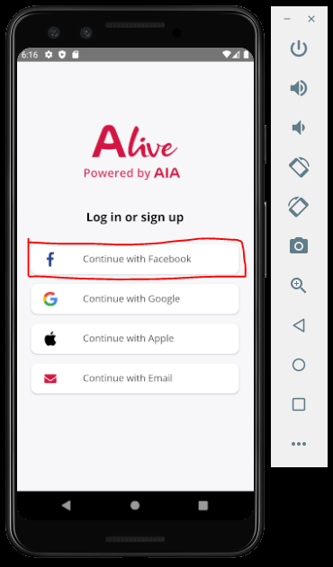
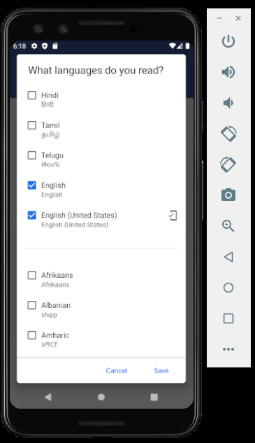
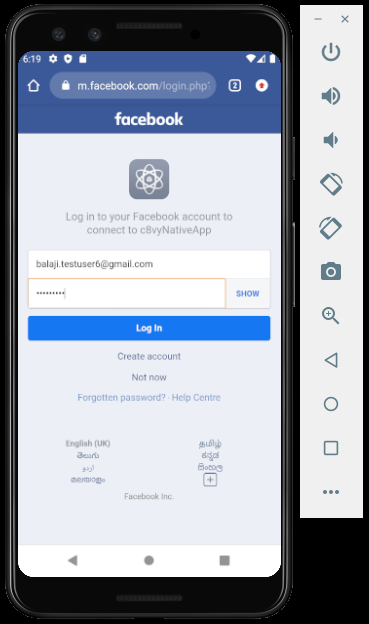
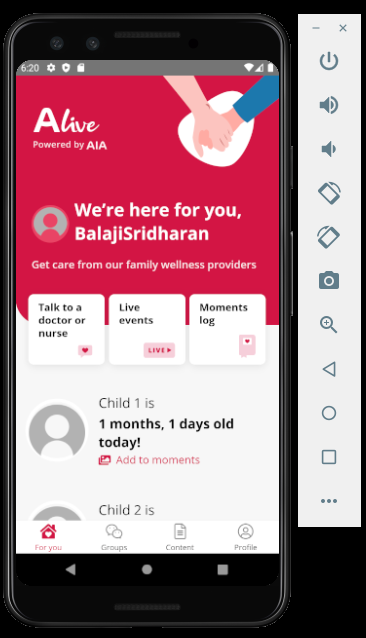
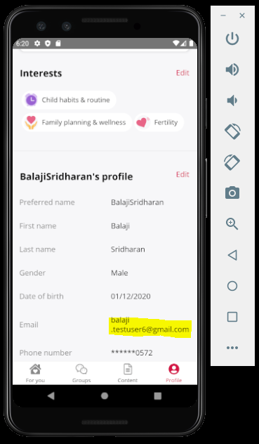
-
Copy the images in folder src\test\resources\Assets to emulator picture folder Files ->sdk_gphone_x86 (DCIM -> Pictures Folder)
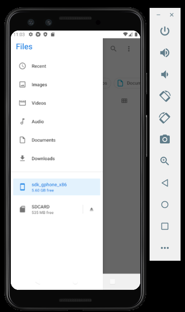
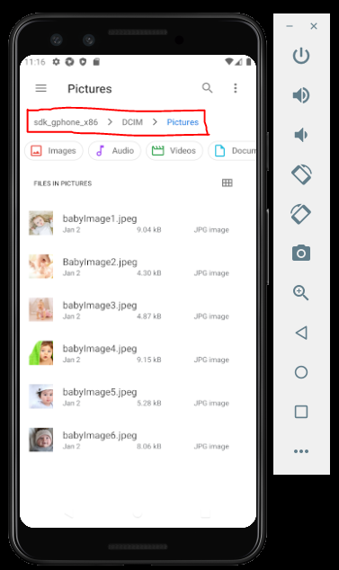
-
Dependencies/Limitations
-
While executing the Google and Facebook related Test cases in sequence, it doesn’t login to correct user login ie. Instead of Google user login it login to Facebook and vice versa. Defect is already been reported. Until the defect gets fixed, it has be executed separately.
-
Inorder to execute the Test via redeem rewards, ensure redeem rewards are not submitted already, if so entry has to be removed in Dynamics for that email-id.
-
Ensure the ArcheType are set as “Planning to Have a Baby” for user logins (Email/Google/FaceBook/Apple) since Manage Profile Test cases executes in that order.
-
Some Front-end automation Scripts also covers both API and Front End App ie. creating a data setup /GET Response via API and perform the necessary steps. References: LiveEvents, Explore and Moments Log.
-
Not all API’s are automated since POST/PATCH calls involves runtime data change as cannot use the same Test data again. This part is covered as part Mobile App integration to trigger POST/PATCH calls while triggering Create/Update operations in Front-end Mobile App.
-
-
How to execute the Test
Pre-requsites:
-
Ensure Screenshot is marked to “Y” to take the Screenshots.
-
Ensure the Test classes are present in TestNG xml for execution

Emulator: Pixel_3_API_30
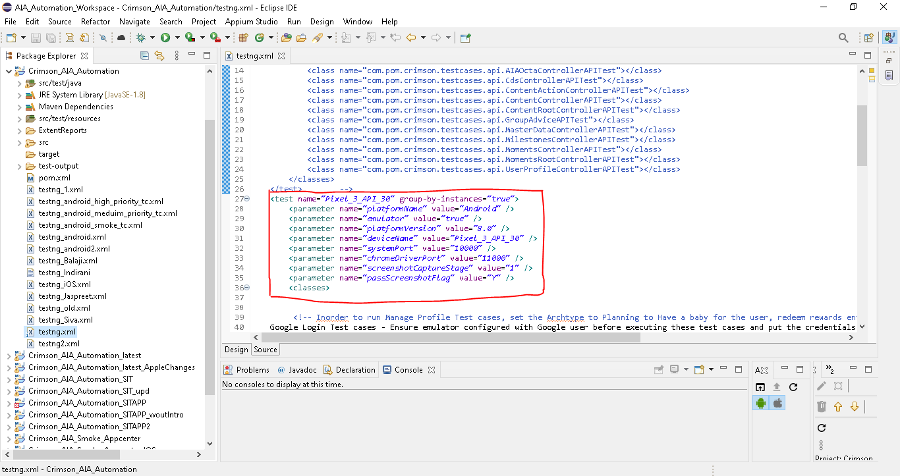
-
Ensure User credentials are present in Constants file.
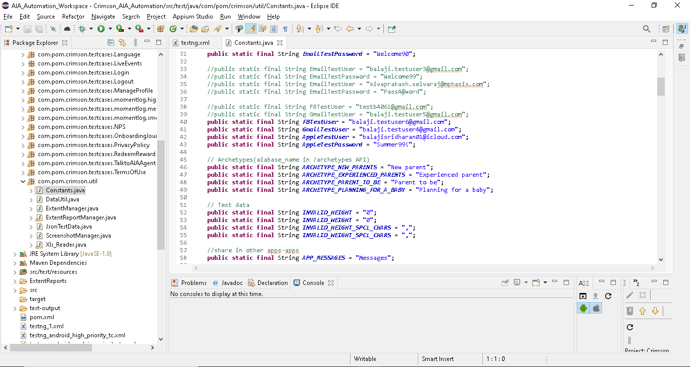
4) Right click TestNG.xml and Run as “TestNG Suite” to execute the Test
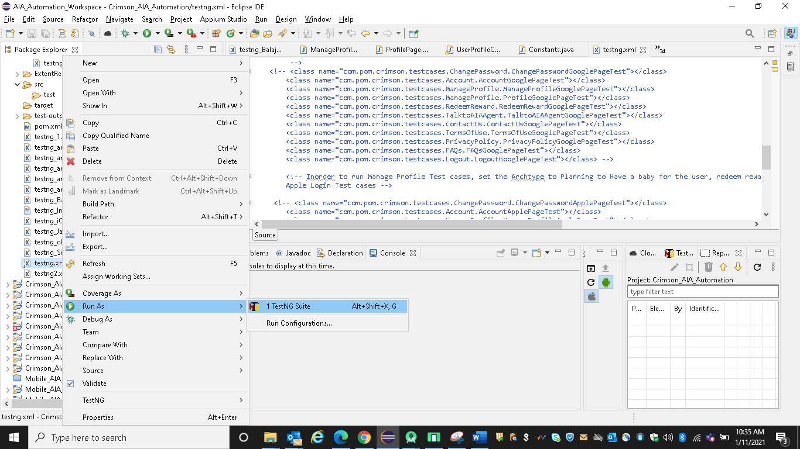
-
-
-
How to Verify the results
The results are stored under \ExtentReports
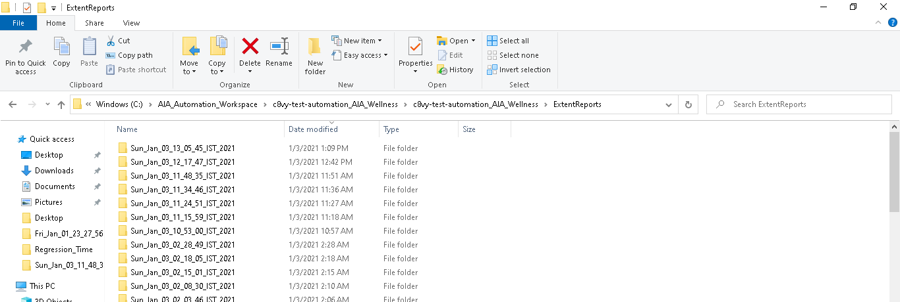
Automation Test script details
-
Notes related to Test data Creation/Deletion/Update:
1. While running some test cases , test data is deleted. Examples
For tests related to Moments log, Vaccine log and Growth log all moments data is deleted first before running tests. This includes testing of empty state for Growthlog, VaccineLog and Moments log.
For Tests related to checking Like/UnLike/Bookmark/RemoveBookmark functionality, all likes and Bookmarks are removed before running tests.
User is removed from all group for one test case. Test class: ExplorePageBasedOnGroupsSectionTest TestMethod:verifyYouNotPartGroupsSection_ExplorePageTestBasedOnGroupsSectionTest
2. Archetype of user is updated for some of the testcases. Similarly DOB is updated for Child profiles and Due date is updated for Primary profiles.
3. Interests are updated while running test cases for Explore page- Update your interests section.
4. For Test cases related to Group chat and Based on Interests section, If user hasn’t joined any group than user joins first available group
-
Observations:
1) Scripts requires maintenance. Ie. As there are no stable locators in Mobile App, hence if there are any locator changes needs to be corrected in the Script.
2) Scripts tend to Fail incase of data not available Ex: LiveEvents data, Moments Log.
3) If there are any latency issues during execution, then automation execution leads to failure as it needs to be executed manually.
-
-
-
Creating new testcases
-
Steps for Creating new Front End Testcase
-
If the testcase is created for a new page in the Mobile app, a new page class should be created under com.pom.crimson.pages package which should contain all the elements available in the page with appropriate locators assigned using xpath and the respective methods should be created to simulate the interactions with those elements.
-
The page class should inherit BasePage class.
-
Seperate Test class should be created under the respective module's package.
-
The Test class should inherit BaseFixture class which will take care of driver initialization.
-
@BeforeTest() method should be created if there are any pre-requisites to be done before starting the test. @BeforeTest() name should not be same as the @BeforeTest() name in BaseFixture.
-
@BeforeMethod() should be craeted and should instantiate LogAssert object if it is used. This is to reset the test result values before each test method. Apart from that, if there are any scripts that needs to be executed before each Test method run can be included.
-
Required @Test methods can be created for each test cases.
-
@AfterMethod() and @AfterTest() methods can be created if required, but with a different name not as in BaseFixture.
-
-
Steps for Creating new API Testcase
-
Same steps as above should be followed for API Test cases also, except If we are creating a new API class it should have an object of BaseAPITest for getting the accesstoken which is used for Authorization of APIs.
-
The Test class should inherit BaseFixtureForAPI.
-
-
-
Notes for generating javadoc
-
Overview document "doc\overview.html" should be u for generating javadoc.
-
javadoc command line parameter "-encoding UTF-8" should be used.
-